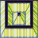
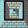
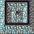
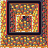
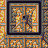
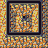
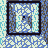

DawnLike wall families — 11 materials (theme-driven, autotile)
Each shown as a 3x3 knit (base + 8 autotile edges). Used via a theme wallMat — infernal/fortress/sewer/underdark/mine + acid/brick/heat/rock/... Not in the retrieval menu (walls are theme-selected, not named).

wall_acida corroded, acid-etched green stone wall
wall_blue
a cold blue-grey dungeon wall

wall_bricka wall of laid masonry brick
wall_deepa wall of deep dark stone, far underground
wall_fort
a heavy fitted-stone fortress wall
wall_heat
a heat-scorched dark stone wall

wall_infernala hellish wall of blackened infernal stone
wall_minea rough-hewn mine-shaft wall
wall_orange
a warm sandstone-orange dungeon wall

wall_rocka natural rough rock cavern wall
wall_snowa wall of packed snow and frost